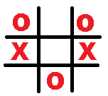

Tic-tac-toe is a 2-player game where the 2nd player is being played by an AI (Artificial Intelligence) bot. The AI bot can detect which move will be the best against you. It can block you from winning and if you don't block, the AI will definately win.
The AI maintains a priority table (a 3x3 box, each cell represent the original game board) which is updated every time a player makes a move. Priority is assigned by the state of the original game board. Every time AI looks at the priority table and select the cell which has the maximum priority. Then it make it's move into the cell. If there are multiple cells with the same priority, then the AI chooses a cell randomly which have higest priorities.
For example, if the priority table has a state of
Then AI will put it's symbol in the 2nd column of the 1st row at it has maximum value.
But for,
It will put value randomly to any of the 4 boxes which has priority level 2.
Priority is assigned according to the current game board.
Now look at the board below:
When the AI is playing with 'X' icon, it will notice the second cell from the first column will make player win. So the priority of the cell will be 2.
But putting icon in the 2nd cell of the 2nd column will make the AI win. So the priority of the cell will be 3 (maximum), and AI will select this cell for next move.
The priority table for the board state in image will be
When AI is playing with 'O' icon, the priority table will be
© Aldrin Saurov Sarker